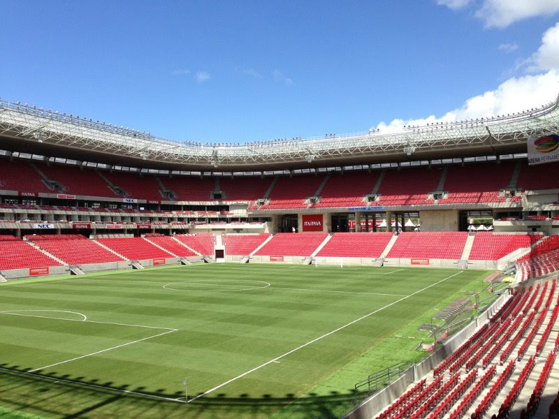
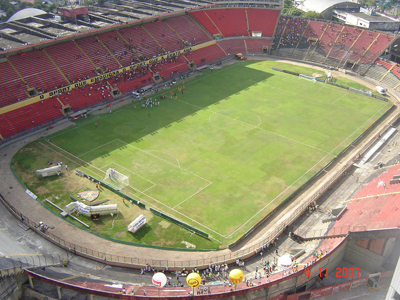

O Estádio José do Rego Maciel (conhecido popularmente como Colosso do Arruda ou ainda Mundão do Arruda) é um estádio de futebol localizado em Recife, estado de Pernambuco, Brasil. Pertencente ao Santa Cruz Futebol Clube e tem atualmente capacidade para 60.044 espectadores.
Inauguração: 4 de julho de 1972
Arena Pernambuco
Arena Pernambuco

Arena Pernambuco é um estádio de futebol construído em São Lourenço da Mata, município da região metropolitana de Recife, para os jogos da Copa das Confederações FIFA de 2013 e da Copa do Mundo FIFA de 2014 em Pernambuco. Com padrão internacional, a arena tem capacidade para 46.000 pessoas. É o Estádio sede do Clube Náutico Capibaribe
Estádio dos Aflitos
Estádio dos Aflitos
O Estádio Eládio de Barros Carvalho, popularmente conhecido como Estádio dos Aflitos, por estar localizado no bairro dos Aflitos, foi o estádio usado pelo Clube Náutico Capibaribe até a inauguração da Arena Pernambuco.
O estádio foi inaugurado em 25 de junho de 1939 e possui capacidade para 22.856 pessoas
Ilha do Retiro
Estádio da Ilha do Retiro

O Estádio Adelmar da Costa Carvalho, mais conhecido como Ilha do Retiro, é um estádio destinado à prática de futebol, e sede oficial do Sport Club do Recife. Localiza-se no bairro da Ilha do Retiro, cidade do Recife, capital de Pernambuco. Foi inaugurada no dia 4 de julho de 1937. Possui capacidade para 35.000 pessoas